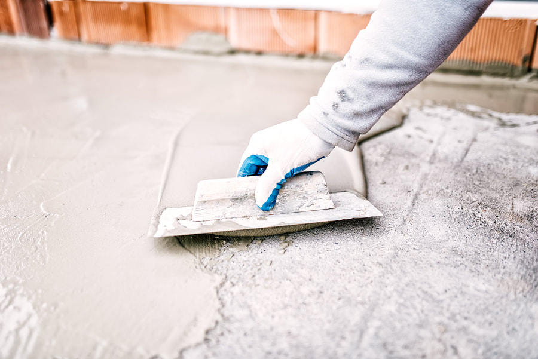

Lay out the size
We mark the patio against the door, the steps, and anything you need to keep, such as an egress window or a hose bib. Bigger is not always better if it blocks drainage.
Home · Services · Concrete Patios
A patio is the flatwork outside the door you actually use. In Youngstown that means a slab that stays put through freeze-thaw, slopes away from the house, and gives you a place for a table that does not rock. We pour broom-finish and stamped patios, and we replace old slabs that have heaved or that hold water against the foundation.
When it is needed

The patio should fall away from the foundation, about enough to move rain without feeling steep under a chair. Downspouts that dump into the same corner will undo a good slope. We look at those before we set forms.
Process
We mark the patio against the door, the steps, and anything you need to keep, such as an egress window or a hose bib. Bigger is not always better if it blocks drainage.
Topsoil comes out. Stone goes in and is compacted. Organic soil left underneath is why a patio settles on one side.
Forms set the slope and the thickness. Concrete is placed, struck off, and finished. Joints are laid out so a crack has a straight place to go.
Keep pets, grills, and furniture off until we say the surface is ready. A cold week in spring changes the calendar. We would rather you wait than scar the finish.
Cost factors
We do not publish a price per square foot. These are the items that move a quote once we see the lot.
Area drives the concrete yardage. A patio that will hold a hot tub or a heavy kitchen island needs a thicker section than a chair and a grill.
A step down to the yard, a thickened edge, or a turn around a bay window adds forming. A rectangle on flat ground is the simple version.
An old slab, pavers, or a timber border have to come out and leave. Tight gates mean the debris moves by hand.
Broom finish is the baseline. Integral color or a stamp is a different scope. Those choices are on the stamped concrete page if you want pattern, not just a slab.
Regrading a low spot, extending a downspout, or buggy-ing concrete through the house or a side yard changes the labor more than the concrete price.
Questions
Enough to move water away from the house without making the table feel tilted. We set that in the forms. A dead-flat patio holds ice and rain against the wall. A steep one is unpleasant to sit on. The right fall is a site decision, not a single number for every yard.
Yes, if the threshold, the siding, and any step can be detailed so water does not run inside. We will not bury siding or block a weep. If the door is low to the yard, the patio may need to stay slightly below the threshold, with the slope still leaving the house.
Yes. Pavers, sand, and the old base come out so the new stone base sits on firm soil. Pouring over pavers is how the slab rocks later. If some edging or a short walk can stay, we will tell you on site.
Broom finish is simpler, grips well, and costs less. Stamped concrete is for when the look of the patio matters as much as the floor space. Both are concrete slabs. The base and the slope are the same kind of work. The finish is what changes.
Yes. A walk is often poured with the patio so the joint between them is planned. Tell us if you need room for a mower or a trash bin. A walk that is too narrow becomes the thing you step off every week.
After the slab has cured enough for point loads. That is longer than the wait for walking, and longer still if nights drop near freezing. We will leave you with a day, not a guess. Dragging a metal table across a green slab will mark it.
If this is a different slab than the one you need, start with Concrete installation.
Tell us the town, what you want poured or replaced, and a phone number. The form includes a source field so we know the lead came from Concrete Youngstown. Do not send payment information.